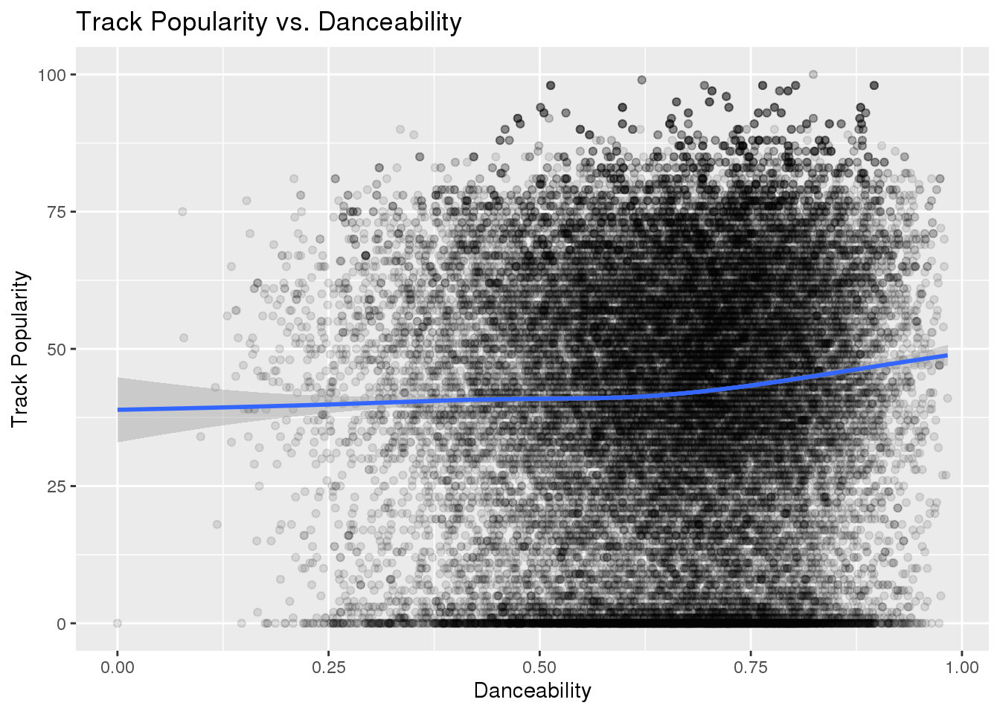

Spotify Songs
library(here)
library(tidyverse)
library(ggplot2)
library(readxl)
dat1 <- read_csv(here::here("data", "spotify_songs.csv"))
dat1 %>%
select(danceability, track_popularity) %>%
ggplot(., aes(x = danceability, y = track_popularity)) +
geom_point(alpha = 0.1) +
geom_smooth()